1 "Are ye able," said the Master,
"To be crucified with me?"
"Yea," the sturdy dreamers answered,
"To the death we follow Thee."
Refrain:
Lord, we are able.
Our spirits are Thine.
Remold them, make us,
Like Thee, divine.
Thy guiding radiance
Above us shall be
A beacon to God,
To love, and loyalty.
2 Are ye able to remember,
When a thief lifts up his eyes,
That his pardoned soul is worthy
Of a place in paradise? [Refrain]
3 Are ye able when the shadows
Close around you with the sod,
To believe that spirit triumphs,
To commend your soul to God? [Refrain]
4 Are ye able? Still the Master
Whispers down eternity,
And heroic spirits answer,
Now, as then, in Galilee. [Refrain]
History of Hymns: "'Are Ye Able,' said the Master"
"'Are Ye Able,' said the Master"
Earl Marlatt
The United Methodist Hymnal, No. 530
Earl Marlatt
“Are ye able,” said the Master,
“to be crucified with me?”
“Yes,” the sturdy dreamers answered,
“to the death we follow thee.”
Lord, we are able. Our spirits are thine.
Remold them, make us, like thee, divine.
Thy guiding radiance above us shall be
a beacon to God, to love, and loyalty.
“Are ye able” is a thoroughly Methodist hymn. Originally in six stanzas, the
hymn was written for a service to consecrate the School of Religious Education
at Boston University in 1926, the title being “Challenge.” Five stanzas were
published in The American Student Hymnal in 1928. Since 1935 the hymn has
appeared mostly in Methodist or United Methodist hymnals.
United Methodist Bishop John Wesley Hardt, former Bishop in Residence at Perkins
School of Theology, places this hymn in the context of its time: “Toward the end
of the 19th century and early in the 20th century, the dreams of ‘the coming
Kingdom of God’ inspired the YMCA and YWCA as well as the vision of ‘The
Evangelization of the World in Our World in Our Generation.’ A companion spirit
inspired many young people to volunteer for service in the first great World War
with the motto ‘to make the world safe for democracy.’”
“Are Ye Able” quickly captured the spirit of young people who were attending
Methodist assemblies and camps for three decades beginning in the 1930s.
According to Methodist hymnologist and hymnal editor Robert Guy McCuthan, the
poet set out to tie together two biblical scenes from the passion of Christ. In
Mark 10:35-40, James and John, the sons of Zebedee, ask Christ, “Grant us to
sit, one at your right hand and one at your left hand in glory.”
Jesus responds, “You do not know what you are asking. Are you able to drink the
cup that I drink, or to be baptized with the baptism with which I am baptized?”
They respond to Jesus, “We are able.”
The second scene comes from Luke 23:39-43 where Christ addresses the two thieves
on either side of him at the crucifixion. While one thief taunts Christ, the
other requests, “Jesus, remember me when you come into your kingdom.” Christ
responds, “Truly, I say to you, today you will be with me in paradise.”
Earl Bowman Marlatt (1892-1976) was the son of a Methodist minister, trained at
DePauw University and Boston University with additional study at Harvard,
Oxford, and the University of Berlin. He taught philosophy at Boston University
from 1925 to 1938 and served as dean of the University from 1938-1945.
He then taught philosophy of religion and religious literature at Perkins School
of Theology, Southern Methodist University from 1846-1957. Until the renovation
of Perkins Chapel in 1998-1999, a small prayer chapel in the north transept was
named for him.
Following his time at SMU, Marlatt was the curator of the Treasure Room and Hymn
Museum at the Interchurch Center, New York City. He wrote several volumes of
poetry and was the associate editor of The American Student Hymnal.
The music was composed by Harry Mason (1881-1964), a student at Boston
University’s School of Religious Education. Musically, the stanzas are
reminiscent of a march while the rousing refrain, typical of gospel hymnody, has
received some criticism for its unusual length.
Nevertheless, one can imagine that the hymn inspired many young people to
Christian service in the early to mid-20th century. Bishop Hardt confirms this:
“Mere words cannot begin to recapture the power and abiding love which the
familiar words ‘Are Ye Able’ brought to generations of Methodist young people.
Perhaps young persons in generations yet to come may again find the eternal
spirit of Christ speaking to them through these inspiring words.”
He wrote many hymns, one of the best known
being Are Ye Able. He also collected church hymns, with the intent
to establish a museum.[2] He
was a friend of Katherine
Lee Bates. His work appeared in Poetry Magazine,[3]
Many of his papers are held at DePauw
University.[4] A
signed manuscript of his hymn Are Ye Able actually written Feb. 23,
1926, is included in the Bridwell Library Manuscript and Documents
Collection.[5]
Earl Marlatt; Edwin V O'Neel (1977). The Return of the Native: An
Autobiography of Dr. Earl Bowman Marlatt, 1892–1976. Winchester,
Indiana: Exponent Publishers.
1>.No one can be perfectly free till all are free; no one can be perfectly
moral till all are moral; no one can be perfectly happy till all are happy。
2>.In the days when all these things are to be answered for, I summon you
and yours, to the last of your bad race, to answer for them. In the days when
all these things are to be answered for, I summon your brother, the worst of
your bad race, to answer for them separately。
9.Euphemism 委婉，婉辞法
婉辞法指用委婉，文雅的方法表达粗恶，避讳的话。
例如：
1>.He is out visiting the necessary. 他出去方便一下。
2>.His relation with his wife has not been fortunate. 他与妻子关系不融洽。
3>.Deng Xiaoping passed away in 1997. (去世)
10.Allegory 讽喻，比方(原意“寓言”)
建立在假借过去或别处的事例与对象之上，传达暗示，影射或者讥讽现世各种现象的含义。
英文解释：an expressive style that uses fictional characters and events to
describe some subject by suggestive resemblances; an extended metaphor
摘自英语专业《大学英语教程》一书
In rhetoric,
a rhetorical device, persuasive device, or stylistic
device is a technique that an author or speaker uses to convey
to the listener or reader a meaning with
the goal of persuading them
towards considering a topic from a perspective, using language designed to
encourage or provoke an emotional display
of a given perspective or action. Rhetorical devices evoke an emotional
response in the audience through use of language, but that is not their
primary purpose. Rather, by doing so, they seek to make a position or
argument more compelling than it would otherwise be.[1]
is an appeal to the audience's emotions, often based on values they
hold. By influencing their feelings, the audience can be pushed to take
an action, believe an argument, or respond in a certain way.[2]
is an appeal based on the good character of the author. It involves
persuading the audience that the author is credible and well-qualified,
or possesses other desirable qualities that mean the author's arguments
carry weight.[2]
is an appeal to timing, such as whether the argument occurs at the right
time and in the ideal surrounding context to be accepted. It has been
argued to be the most important since no matter how logical, emotionally
powerful and credible the argument, if the argument is made in an
unsuitable context or environment, the audience will not be receptive to
it.[3]
Rhetorical devices can be used to facilitate
and enhance the effectiveness of the use of rhetoric in any of the four
above modes
of persuasion. Rather than certain rhetorical devices falling under
certain modes of persuasion, rhetorical devices are techniques authors,
writers or speakers use to execute rhetorical appeals. Thus, they overlap
with figures
of speech, differing in that they are used specifically for persuasive
purposes, and may involve how authors introduce and arrange arguments (see
the section on discourse
level devices) in addition to creative use of language.
Sonic devices depend on sound. Sonic
rhetoric is used as a clearer or swifter way of communicating content in
an understandable way. Sonic rhetoric delivers messages to the reader or
listener by prompting a certain reaction through auditory perception.[4]
Alliteration is the repetition of the sound of an initial consonant or
consonant cluster in subsequent syllables. It is one of the most
well-known and effective rhetorical devices throughout literature and
persuasive speeches.[5][6]
From forth the fatal loins of these two foes,
A pair of star-cross'd lovers take their life. (R&J Prologue)
Small showers last long but sudden storms are short. (R2 2.1)
Consonance is the repetition of consonant sounds across words which
have been deliberately chosen. It is different from alliteration as it can
happen at any place in the word, not just the beginning.[8]
In the following example, the k sound
is repeated five times.
...with streaks of light,
And flecked darkness like a drunkard reels... (R&J 2.3)
Onomatopoeia is the use of words that attempt to emulate a sound. When
used colloquially, it is often accompanied by multiple exclamation
marks and in all
caps. It is common in comic strips and some cartoons.[5][6]
Some examples include these: smek, thwap, kaboom, ding-dong, plop, bang and pew.
Anaphora is repeating the same word(s) at the beginning of
successive sentences, phrases or clauses.[5]
There's no trust, No faith, no honesty in men; all perjured, All forsworn, all naught, all dissemblers. (R&J 3.2)
With mine own tears I wash away my balm, With mine own hands I give away my crown, With mine own tongue deny my sacred state, With mine own breath release all duty's rites. (R2 4.1)
Epistrophe is repeating the same word(s) at the end instead.[10]
If you had known the virtue of the ring, Or half her worthiness that gave the ring, Or your own honour to contain the ring, You would not then have parted with the ring. (MoV 5.1)
Symploce is a simultaneous combination of both anaphora and epistrophe,
but repeating different words at the start and end.[11]
That Angelo's forsworn; is it not
strange? That Angelo's a murderer; is't not strange? That Angelo is an adulterous thief, An hypocrite, a virgin-violator; Is it not strange and strange? (Measure 5.1)
ALFRED DOOLITTLE: I'll tell you,
Governor, if you'll only let me get a word in. I'm willing to tell you.
I'm wanting to tell you. I'm waiting to tell you.
HENRY HIGGINS: Pickering, this chap has a certain natural gift of
rhetoric. Observe the rhythm of his native woodnotes wild. 'I'm willing to
tell you. I'm wanting to tell you. I'm waiting to tell you.' Sentimental
rhetoric! That's the Welsh strain in him. It also accounts for his
mendacity and dishonesty. (George
Bernard Shaw, Pygmalion)
Epanalepsis repeats the same word(s) at the beginning and end.[7]
Once more unto the breach, dear friends,
once more! (H5 3.1)
Antithesis involves putting together two opposite ideas in a sentence
to achieve a contrasting effect.[14] Contrast
is emphasised by parallel but similar structures of the opposing phrases
or clauses to draw the listeners' or readers' attention. Compared to
chiasmus, the ideas must be opposites.
Scarce any joy Did ever so long live; no sorrow But killed itself much sooner. (Winter's
Tale 5.3)
Some rise by sin, and some by virtue
fall. (Measure 2.1)
The evil that men do lives after them, The good is oft interred with their bones. (Julius
Caesar 3.2)
QUEEN: Come, come, you answer with an
idle tongue. HAMLET: Go, go, you question with a wicked tongue. (Hamlet 3.1)
Antimetabole involves repeating but reversing the order of words,
phrases or clauses. The exact same words are repeated, as opposed to
antithesis or chiasmus.
Suit the action to the word, the word to
the action. (Hamlet 3.2)
The setting sun, and music at the close, As the last taste of sweets, is sweetest last. (R2 2.1)
Cease to lament for that thou canst not
help, And study help for that which thou lament'st. (TGV 3.1)
Chiasmus involves parallel clause structure but in reverse order for
the second part. This means that words or elements are repeated in the
reverse order.[15] The
ideas thus contrasted are often related but not necessarily opposite.
But O, what damned minutes tells he o'er Who dotes, yet doubts; suspects, yet strongly loves! (Othello 3.3)
Asyndeton is the removal of conjunctions like "or," "and," or "but"
from your writing where it might have been expected because the sentence
flows better, or more poetically, without them.[15]
I might in virtue, beauties, livings,
friends, exceed account... (MoV 3.2)
Auxesis is arranging words in a list from least to most significant.[16] This
can create climax.
Since brass, nor stone, nor earth, nor
boundless sea, But sad mortality o'er-sways their power... (Sonnet
65)
Today, today, unhappy day too late, O'erthrows thy joys, friends, fortune, and thy state (R2 3.2)
Catacosmesis, the opposite, involves
arranging them from most to least significant.[16]
Nor brass, nor stone, nor parchment bears
not one. (Winter's
Tale 1.2)
Be certain what you do, sir, lest your
justice Prove violence, in the which three great ones suffer, Yourself, your queen, your son. (Winter's
Tale 2.1)
This can create anticlimax for
humour or other purposes.
He has seen the ravages of war, he has
known natural catastrophes, he has been to singles bars. (Woody
Allen)
An oxymoron is
a 2-word paradox often achieved through the deliberate use of antonyms.
This creates an internal contradiction that can have rhetorical effect.[17]
His humble ambition, proud humility; His jarring concord, and his discord dulcet; His faith, his sweet disaster. (All's
Well 1.1)
I could weep And I could laugh, I am light and heavy. (Coriolanus 2.1)
Zeugma involves the linking of two or more words or phrases that
occupy the same position in a sentence to another word or phrase in the
same sentence. This can take advantage of the latter word having multiple
meanings depending on context to create a clever use of language that can
make the sentence and the claim thus advanced more eloquent and
persuasive.
In the following examples, 2 nouns (as
direct objects) are linked to the same verb which must then be interpreted
in 2 different ways.[5]
Zeugma is sometimes defined broadly to
include other ways in which one word in a sentence can relate to two or
more others. Even simple constructions like multiple subjects linked to
the same verb are then "zeugma without complication".[18]
Fred excelled at sports; Harvey at
eating; Tom with girls.
Friends, Romans, countrymen, lend me your
ears. (Julius
Caesar 3.2)
Discourse level rhetorical devices rely on
relations between phrases, clauses and sentences. Often they relate to how
new arguments are introduced into the text or how previous arguments are
emphasized. Examples include antanagoge, apophasis, aporia, hypophora, metanoia and procatalepsis.
Amplification involves repeating a word or expression while adding
more detail, to emphasise what might otherwise be passed over.[14] This
allows one to call attention to and expand a point to ensure the reader
realizes its importance or centrality in the discussion.
But this revolting boy, of course, Was so unutterably vile, So greedy, foul, and infantile He left a most disgusting taste Inside our mouths... (Roald
Dahl, Charlie
and the Chocolate Factory)
Pleonasm involves using more words than necessary to describe an idea.
This creates emphasis and can introduce additional elements of meaning.[19]
I heard it with my own ears.
I should have found in some place of my
soul A drop of patience. (Othello 4.2)
Swerve not from the smallest article of
it, neither in time, matter or other circumstance. (Measure 4.2)
Antanagoge involves 'placing a good point or benefit next to a fault
criticism, or problem in order to reduce the impact or significance of the
negative point'.[6]
Within the infant rind of this weak
flower Poison hath residence, and medicine power. (R&J 2.3)[20]
One scenario involves a situation when one
is unable to respond to a negative point and chooses instead to introduce
another point to reduce the accusation's significance.
We may be managing the situation poorly,
but so did you at first.
Antanagoge can also be used to positively
interpret a negative situation:
Apophasis is the tactic of bringing up a subject by denying that it
should be brought up.[21] It
is also known as paralipsis, occupatio, praeteritio, preterition, or
parasiopesis.
There's something tells me, but it is not
love, I would not lose you; and you know yourself, Hate counsels not in such a quality. (MoV 3.2)
This device has a number of effects that
make it quite useful in politics. Donald
Trump, for instance, has been noted to frequently use apophasis when
attacking his political opponents.[22][23]
Syllogism which omits either one of the premises or the conclusion.
The omitted part must be clearly understood by the reader. Sometimes this
depends on contextual knowledge.
Mark'd ye his words? He would not take
the crown; Therefore 'tis certain he was not ambitious. (Julius
Caesar 3.2; the premise implied is that no ambitious person would
refuse the crown)
They say it takes hundreds of years to
build a nation. Welcome to Singapore. (Singapore
Tourism Board campaign; to arrive at the omitted conclusion that
Singapore is exceptional, the visitor must know that Singapore has but a
short history of 50-odd years as an independent nation)
Hyperbole is deliberate exaggeration.[6] This
can be for literary effect:
The brightness of her cheek would shame
those stars, As daylight doth a lamp; her eyes in heaven Would through the airy region stream so bright That birds would sing and think it were not night (R&J 2.2)
His face was as the heavens... His legs bestrid the ocean: his rear'd arm Crested the world... realms and islands were As plates dropp'd from his pocket. (A&C 5.2)
Or for argumentative effect:
Her election to Parliament would be the
worst thing to ever happen to this country![1]
The use of hypophora is
the technique whereby one asks a question and then proceeds to answer the
question. This device is one of the most useful strategies in writing
essays to inform or persuade a reader.[14]
Can honour set to a leg? No. Or an arm?
No. Or take away the grief of a wound? No. Honour hath no skill in
surgery, then? No. What is honour? A word. What is in that word honour?
What is that honour? Air. A trim reckoning! Who hath it? He that died a'
Wednesday. Doth he feel it? No. Doth he hear it? No. 'Tis insensible,
then? Yea, to the dead. But will it not live with the living? No. Why?
Detraction will not suffer it. (1H4 5.1)
Metanoia qualifies a statement or by recalling or rejecting it in part
or full, and then re-expressing it in a better, milder, or stronger way.[6][7] A
negative is often used to do the recalling.
All faults that may be named, nay, that
hell knows... (Cymbeline 2.4)
By anticipating and answering a possible
objection, procatalepsis allows
an argument to continue while rebutting points opposing it. It is a
relative of hypophora.
Procatalepsis shows that concerns have been thought through.[14]
'All right!' you'll cry. 'All right!'
you'll say,
'But if we take the set away, What shall we do to entertain Our darling children? Please explain!' We'll answer this by asking you,
'What used the darling ones to do? How used they keep themselves contented Before this monster was invented?' (Roald
Dahl, Charlie
and the Chocolate Factory)
Understatement, or meiosis,
involves deliberately understating the importance, significance or
magnitude of a subject. This means the force of the description is less
than what is expected, thus highlighting the irony or extreme nature of an
event.[14]
The war situation has developed not
necessarily to Japan's advantage. (The Jewel
Voice Broadcast)
BENVOLIO: What, art thou hurt?
MERCUTIO: Ay, ay, a scratch, a scratch. (R&J 3.1;
Mercutio dies of his wounds shortly after.)
The captain's announcement onboard British
Airways Flight 9 has been described as 'a masterpiece of
understatement':[25]
Ladies and gentlemen, this is your
captain speaking. We have a small problem. All four engines have stopped.
We are doing our damnedest to get them going again. I trust you are not in
too much distress.[26]
A subtype of understatement is litotes,
which uses negation:
Irony is the figure of speech where the words of a speaker intends to
express a meaning that is directly opposite of the said words.[5][6]
Here, under leave of Brutus and the rest
- For Brutus is an honourable man; So are they all, all honourable men - Come I to speak in Caesar's funeral. He was my friend, faithful and just to me: But Brutus says he was ambitious; And Brutus is an honourable man. (Julius
Caesar 3.2; Antony attacks Brutus's character and that of his
co-conspirators)
Metaphor connects two different things to one another. It is
frequently invoked by the to be verb.[5][6] The
use of metaphor in rhetoric is primarily to convey to the audience a new
idea or meaning by linking it to an already familiar idea or meaning. The
literary critic and rhetorician, I.
A. Richards, divides a metaphor into two parts: the vehicle and the
tenor.[27]
In the following example, Romeo compares
Juliet to the sun (the vehicle), and this metaphor connecting Juliet to
the sun shows that Romeo sees Juliet as being radiant and regards her as
an essential being (the tenor).
But soft, what light through yonder
window breaks? It is the East, and Juliet is the sun. (R&J 2.2)
Simile compares two different things that resemble each other in at
least one way.[5][6] It
uses the as... as construction as compared to metaphor which is
direct equivalence.
In the following example, the nurse compares
Romeo's manners and behaviour to a lamb.
(1)Bacteria are so small that a single round one of acommon type is about
1/25,000 of an in ch across when thesebacteria are magnified 1,000 times, they
look only aslarge as apencil point.
细菌是这样小，一种普通类型的圆形细菌直径大约只有1/25,000英寸。这种细菌放大一千倍看起来也只有铅笔 尖那么大。
(2)There now exists a kind of glass so sensitive to light that,like photographic
film,it wil l record pictures and designs. 现在有一种对光十分敏感的玻璃，它像胶卷一样能记录图像和图案。
(1)A hundred to one it will be a failure.这件事极可能失败。
(2)He has one over the eight.他酩酊大醉。
英语中还有许多隐喻成语。例如：
to teach fish to swim班门弄斧
to plough the sand白费力气
这些隐喻成语的最大特色就是通过具体的、妇孺皆知的形象来表情达意。请看：a square peg in a roun d
hole用“园洞中的方钉”，来说明“不适宜担任某一职务的人”，真是十分恰当；between the devil and the deepsea,一边是魔鬼，另一边是大海，叫人走投无路，十分传神地表达出“进退两难”的境界。
3、转喻(the metonymy)
转喻是比隐喻更进一步的比喻，它根本不说出本体事物，直接用比喻事物代替本体事物。例如：
(1)The buses in America are on strike now.美国的公共汽车司机正在罢工（这里buses 喻指司机driv ers)。
(2)The pen is mightier than the sword.文人胜于武士（以pen，sword喻指使用这物的人）。
英语中一些鸟兽鱼虫的名字，除本义外，常可转借喻人，形象生动，意味隽永。例如：
(1)Mrs Smith is nice but her husband is such a bear thatnobody likes
him.史密斯夫人和蔼可亲， 但她丈夫为人粗鲁，脾气暴躁，谁都不喜欢他（以兽喻人）。
A metaphor is the less obvious form of simile because it uses an entirely
different concept to represent the subject without the use of the signal words
"as" and "like."
The main clue with hyperbole is the emphasis on the subject by using
exaggeration or an event that is deemed impossible to happen.
Euphemism is often used even during casual talking. It has become an inculcated
element of our speech, that sometimes we don't notice them but we understand
them.
In a nutshell, irony is saying the complete opposite of what you really want to
say. Irony and sarcasm are closely tied, so it is a little tricky to identify
ironic statements sometimes.
Simile
Looking to spark a little reader interest? Similes work great for this because
they make an interesting comparison between two things using the word like or
as.
The toddler is as devious as a devil.
The dog was sneaky like a fox.
Rhetorical devices in advertising: when small words generate big results!
Have you heard about Polysyndeton, Anadiplosis, Anaphora, Antimetabole,
Chiasmus, Epizeuxis, Syllepsis?
Those names are so funny and exotic that most people seem to confound them with
Star Wars characters.
But, those are not names but literary devices. Literary devices are copywriting
techniques used to create distinctive and pointed effects in an ad. They are
here to communicate information, and/or to help the reader understand the piece
on a deeper level.
These devices are used to get the reader to more strongly connect with either
the story.
What are literary devices
Literary Devices are essential to know because they make texts more exciting and
more fun to read. And remember that some of the tasks of the copywriter is to
attract attention, to arouse Interest and to stimulate desire.
Insofar, to be successful, an ad copy must possess at least the 3 following
segments or sequence:
It
must draw attention to itself.
It must sustain the
interest it has attracted.
It must be
remembered, or at any rate, recognized as
familiar.
That’s what literary devices are for…
The
purpose of a literary device is to bring extra meaning to a copy or an ad to
draw attention and keep the lead hooked to read the rest of the text.
A Literary Device refers to the typical structure used by copywriters in their
works to convey a message in a simple understandable manner to the readers. When
employed properly, the different literary devices help readers to appreciate,
interpret and analyze a literary work.
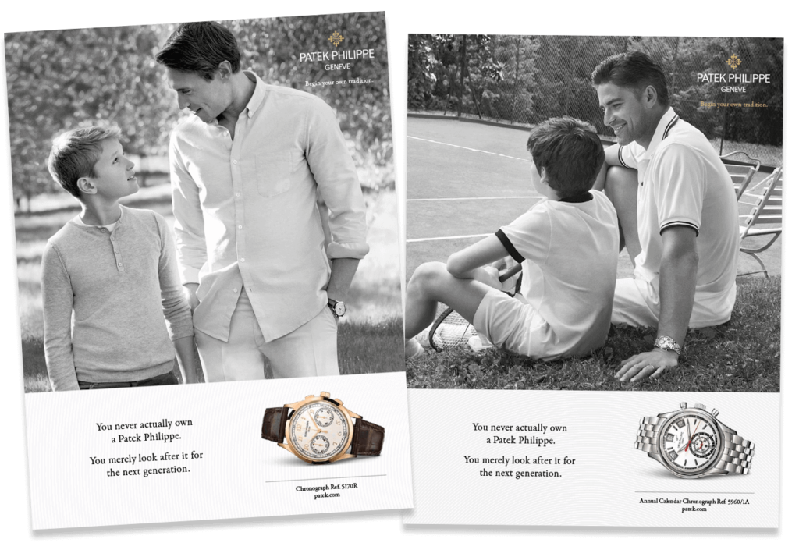
This legend is a metonymy: the substitution of the name of an attribute or
adjunct for that of the thing meant.
If you want to influence more people; and compel those people to purchase your
services or products; you need to work on your copywriting the same way poets
and novelists work on their copy: by attracting the attention of the readers.
Failing to do so will avoid creating a connection with your readers and they’ll
be much less likely to purchase your services or products.
The deeper the connection you create with your reader, the easier it is to get
them to buy from you.
Because the literary devices are not used very often, they mark a positive
disruption in the reading flow. And every time there is a disruption, there is
something in the reader’s mind that makes them stop.
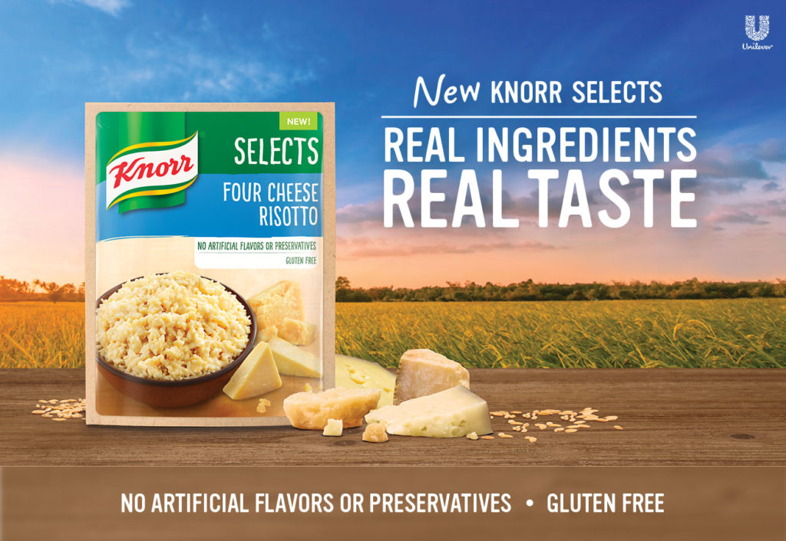
Repetition
Here are 10 literary techniques that you can use in your copy that prove
copywriters and novelists (and even poets!) aren’t so different after all.
These literary devices embody the styles and formats of the way we write real
compelling copy. One thing though: a lot of them are probably done
subconsciously. It’s kind of cool to know there’s a name and history behind each
of them.
Parataxis
Parataxis can be defined as a rhetorical device in which phrases and clauses are
placed one after another independently, without coordinating or subordinating
them through the use of conjunctions. It is also called “additive style.”
The function of the parataxis is to associate the brand-name with a ‘tag-line’
expressing an appealing and distinctive image of the product.
The
newest eye cosmetic of all – Innoxa’s Shadow Eye Shadow
Eastern – the wings of
man (Eastern)
Burgundy – The home of
Pinot Noir. (Burgundy wine)
Looks different works
better. Viking 6 series. Easy start, quick
finish. (Viking mower )
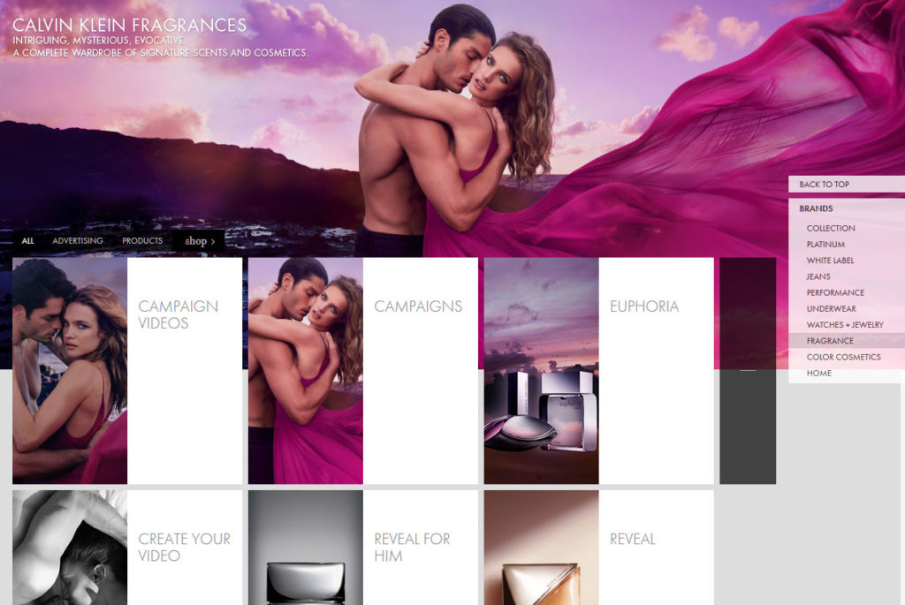
Parataxis is the placing of clauses or phrases one after another, without words
to indicate coordination or subordination, as in this Calvin Klen ad
“Intriguing. Evocative. Mysterious.”
Bold.
Creative. Convincing. Diligent. Versatile. Precise. Those are the quality of
our copywriters!
New. Perfectly Real
Compact Makeup. Believably perfect. (Clinique)
Your Life. Your Car.
Connected. (Acura)
Little. The next big
thing. Meet iPod mini. Apple
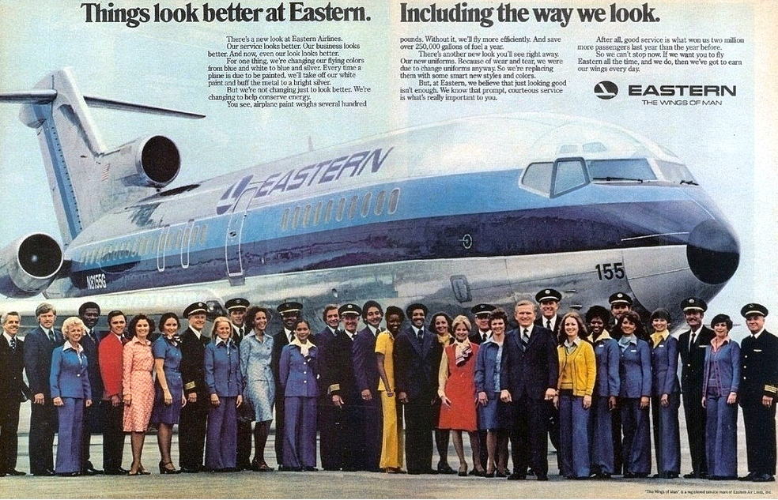
This ad for eastern has 2 literary devices. A Chiasmus “Things look better at
Eastern. Including the way we look.” And a Parataxis:” Eastern – The wings of
man”
In the standing details, parataxis is commonly combined with a vertical display
in the product-and-price listing.
Alliteration
头韵与拟声（the alliteration and onomatopoeia）
1.头韵。头韵即连续数个单词的头音或头字母相同，这种现象在英语中常见。例如：
(1)He is all fire and fight.他从不放弃任何机会。
(2)There was something simple,sincere in that voice.那声音里有种纯朴真诚的东西。
An alliteration is a series of words or phrases that all (or almost all) start
with the same sound. These sounds are typically consonants to give more stress
to that syllable. You’ll often come across alliteration in poetry, titles of
books and poems (Jane Austen is a fan of this device, for example—just look at
Pride and Prejudice and Sense and Sensibility). Another form might be the use of
tongue twisters.
Example:
“Peter Piper picked a peck of pickled peppers.” In this tongue twister, the “p”
sound is repeated at the beginning of all major words.
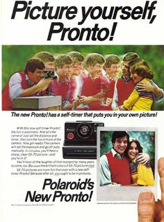
Alliteration: “Picture. Pronto. Polaroid”
Imagine
an inline influx of impeccable & ideal inquiries so important, influential &
impacting to your industry that you’ll never be idle in a while… That’s what
MyAdGency.Com will do for you…
Examples in ads:
Performance. Prestige. Passion for Innovation. (Breitling watch )
Perfect Pictures
Posted Pronto (Photobox)
Light. Loose. Layered.
(John Frieda)
XTROVERT. XPLOSIVE.
LOVE THE COLOUR. COLOR XXL (Schwartzkopf)
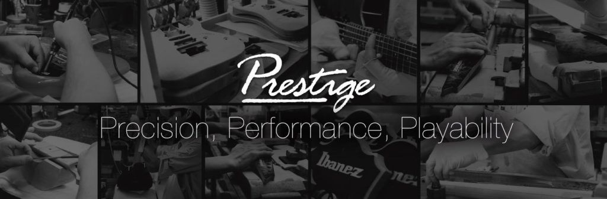
This ad for Ibanez has a very obvious alliteration: “Prestige. Precision.
Performance. Playability.”
Hyperbole
7.Hyperbole 誇張
誇張是以言過其實的說法表達強調的目的。它可以加強語勢，增加表達效果
Hyperbole, derived from a Greek word meaning ‘over-casting’ is a literary
device, which involves an amplification of ideas for the sake of emphasis.
Businessmen and manufacturers regularly use hyperboles to advertise their goods
in an as attractive a way as possible:
You usually don’t see a lot of overnight successes in online marketing but Old
Spice’s “The Man Your Man Could Smell Like” campaign is an exception. In
February 2010, the digital agency Weiden + Kennedy launched the first commercial
in the campaign, featuring actor Isaiah Mustafa, and it was a viral sensation.
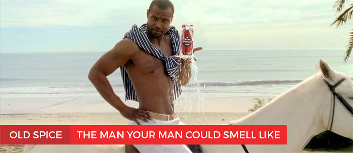
Typical Hyperbole: The ad for Old Spice deodorant, promise the ladies that the
semi-God in the picture is “the man your man could smell like” if he used the
product.
Other Hyperboles used in
advertising:
No
other pain-relieving gel works like Deep Relief (Deep relief)
The best just got
bigger!
The number one to
Eastern Europe
In the last slogan, there is a hyperbole in that it stresses ONLY. It, of
course, is by no means the only razor that does so but it does not do too much
harm to brag a little bit to attract attention
So much
winning, you’ll end up wondering whether MyAdgency.Com hidden name is Publicis…
Negative Hyperbole
Rather than praising the benefits of their own services or products with
hyperbole, advertisers often resort to using negative hyperbole to attack the
competition.
Ads for the DIRECTV Genie DVR service compares the inconvenience of cable-based
DVR services to:
a bite
from a turtle at the zoo
an electric shock from
a car battery
a dentist sneezing
into a patient’s open mouth
But that’s political campaign ads that are the standard for negative hyperbole.
Most politicians have nothing to propose, so they just belittle the reputation
of the other politicians with outlandish claims, exaggerations and sometimes
lies of guilt by association.
Example:
Democrats produce mobs, Republicans produce jobs
On top of being a hyperbole, this political slogan is also an epiphora.
Using Extra Conjunctions
A polysyndeton is a literary device in which conjunctions (e.g. and, but, or)
are used repeatedly in quick succession, often with no commas, even when the
conjunctions could be removed.
Examples:
For
Christmas, would want a doll and a ball and an IPad and a new pair of boots?
If there be cords or
knives or poison or fire or suffocating streams, I’ll not endure it”
(Shakespeare, Othello)
It is respectable to
have no illusions—and safe—and profitable—and dull. (Joseph Conrad, Lord Jim,
1900)
Landing
pages and copywriting and email marketing and content management and Facebook
ads and graphic design! Give us marketing goals, we’ll give you traffic!
Polysyndeton can also make the copy sound laborious and tedious, which can be
useful if the copy is describing something laborious and tedious. In that sense,
it can be used to underline the pain points of NOT using a product.
Example:
If you
don’t use product XYZ, you’ll incur more stress and more headaches and more
high blood pressure and your body will be more prone to external attacks and
you may incur a stroke…
Reversal of Structure
A chiasmus is a rhetorical or literary device in which two or more clauses are
balanced against each other by the reversal of their structures in order to
produce an artistic effect.
Example:
“They
don’t care about how much you know until they know how much you care.” (Jim
Calhoun)
“Ask not what your
country can do for you, ask what you can do for your country.” (JFK)
Never let a Fool Kiss
You or a Kiss Fool You.
At
MyAdgency, we think that it’s not because it is not selling that you don’t
promote. It is because you don’t promote that you don’t sell.
Notice that the second half of this sentence is an inverted form of the first
half, both grammatically and logically.
In the simplest sense, the term chiasmus applies to almost all “criss-cross”
structures, and this is a concept that is common these days. In its strict
classical sense, however, the function of chiasmus is to reverse grammatical
structure or ideas of sentences, given that the same words and phrases are not
repeated.
A Chiasmus is different from antimetabole. An antimetabole is the repetition of
words in consecutive clauses but in an inverted or transposed order.
Antimetabole examples resemble chiasmus, as they are marked by the inversion of
the structure. In examples of chiasmus, however, the words and phrases are not
repeated. Generally, chiasmus and antimetabole are regarded by many critics as
similar tools of rhetoric.
Examples:
“You
forget what you want to remember, and you remember what you want to forget.”
“All for one and one
for all” (Alexandre Dumas)
“Mankind must put an
end to war or war will put an end to mankind.” (John F. Kennedy)
I know what I like,
and I like what I know
Instead of moving the
furniture around, why not move around the furniture? (Dyson vacuum cleaner)
The new Chevy HHR is
proof that cool can be useful & useful can be cool. (Chevrolet)
You can take it out of
the country, but you can’t take the country out of it (Salem cigarettes)
I am stuck on
Band-Aid, and Band-Aid’s stuck on me (Band-Aid bandages)
Starkist doesn’t want
tuna with good taste, Starkist wants tuna that tastesgood! (Starkist Tuna)
15.Antithesis 对照，对比，对偶 这种修辞指将意义完全相反的语句排在一起对比的一种修辞方法。 例如： 1>.Not that I loved Caeser less but that I loved Romemore。
Contrast 2 words, opposing ideas, features, or benefits. Usually expressed in a
parallel form. Think of antithesis as opposing things like:
Big vs.
small
Hot vs. cold
Up vs. Down
Before vs. After
Us vs. them
Parent vs. child
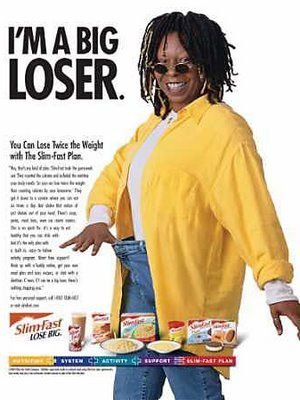
“I’m a big loser” is an antithesis, a contrast or opposition between two things
(big & loser).
Antithesis relates to words, clauses or sentences. It is based on antonyms or
opposite ideas. Example of Antithesis in
ads:
Talks
inside. Shouts outside. New 2006 Fiesta (Ford)
Imagine a mini phone
with maximum style and design
Feel the surge of calm
(Lexus)
I’m a big loser. (Slim
Fast)
Small seeds generate
big ideas. (CNN)
Everybody doesn’t like
something, but nobody doesn’t like Sara Lee. (Sara Lee)
Epizeuxis
Epizeuxis 是重复用于强调的单词或短语的修辞术语，通常在两者之间没有任何单词。
Simple Repetition of
Words and Phrases
In rhetoric, an epizeuxis is the repetition of a word or phrase in immediate
succession, typically within the same sentence, for vehemence or emphasis. It is
also called diacope.
The most well-known example is the real estate mantra that it’s all about
“location, location, location.”
Examples:
Never
give in — never, never, never, never, in nothing great or small, large or
petty, never give in except to convictions of honor and good sense.”
( Winston Churchill)
“It’s been a year of
high highs and low lows.” (Harry Weller)
The answer to that
question is no, no, no, a thousand times no.
Give me a break! Give
me a break! Break me off a piece of that Kit Kat bar! (Kit Kat)
Chiasmus & Antimetabole
Reversal of Structure
A chiasmus is a rhetorical or literary device in which two or more clauses are
balanced against each other by the reversal of their structures in order to
produce an artistic effect.
Example:
“They
don’t care about how much you know until they know how much you care.” (Jim
Calhoun)
“Ask not what your
country can do for you, ask what you can do for your country.” (JFK)
Never let a Fool Kiss
You or a Kiss Fool You.
At
MyAdgency, we think that it’s not because it is not selling that you don’t
promote. It is because you don’t promote that you don’t sell.
Notice that the second half of this sentence is an inverted form of the first
half, both grammatically and logically.
In the simplest sense, the term chiasmus applies to almost all “criss-cross”
structures, and this is a concept that is common these days. In its strict
classical sense, however, the function of chiasmus is to reverse grammatical
structure or ideas of sentences, given that the same words and phrases are not
repeated.
A Chiasmus is different from antimetabole. An antimetabole is the repetition of
words in consecutive clauses but in an inverted or transposed order.
Antimetabole examples resemble chiasmus, as they are marked by the inversion of
the structure. In examples of chiasmus, however, the words and phrases are not
repeated. Generally, chiasmus and antimetabole are regarded by many critics as
similar tools of rhetoric.
Examples:
“You
forget what you want to remember, and you remember what you want to forget.”
“All for one and one
for all” (Alexandre Dumas)
“Mankind must put an
end to war or war will put an end to mankind.” (John F. Kennedy)
I know what I like,
and I like what I know
Instead of moving the
furniture around, why not move around the furniture? (Dyson vacuum cleaner)
The new Chevy HHR is
proof that cool can be useful & useful can be cool. (Chevrolet)
You can take it out of
the country, but you can’t take the country out of it (Salem cigarettes)
I am stuck on
Band-Aid, and Band-Aid’s stuck on me (Band-Aid bandages)
Starkist doesn’t want
tuna with good taste, Starkist wants tuna that tastesgood! (Starkist Tuna)
“I’m a big loser” is an antithesis, a contrast or opposition between two things
(big & loser).
Antithesis
Contrast 2 words, opposing ideas, features, or benefits. Usually expressed in a
parallel form. Think of antithesis as opposing things like:
Big vs.
small
Hot vs. cold
Up vs. Down
Before vs. After
Us vs. them
Parent vs. child
“I’m a big loser” is an antithesis, a contrast or opposition between two things
(big & loser).
Antithesis relates to words, clauses or sentences. It is based on antonyms or
opposite ideas. Example of Antithesis in
ads:
Talks
inside. Shouts outside. New 2006 Fiesta (Ford)
Imagine a mini phone
with maximum style and design
Feel the surge of calm
(Lexus)
I’m a big loser. (Slim
Fast)
Small seeds generate
big ideas. (CNN)
Everybody doesn’t like
something, but nobody doesn’t like Sara Lee. (Sara Lee)
Apple with an Epizeuxis/Anaphora
Epizeuxis
Simple Repetition of
Words and Phrases
In rhetoric, an epizeuxis is the repetition of a word or phrase in immediate
succession, typically within the same sentence, for vehemence or emphasis. It is
also called diacope.
The most well-known example is the real estate mantra that it’s all about
“location, location, location.”
Examples:
Never
give in — never, never, never, never, in nothing great or small, large or
petty, never give in except to convictions of honor and good sense.”
( Winston Churchill)
“It’s been a year of
high highs and low lows.” (Harry Weller)
The answer to that
question is no, no, no, a thousand times no.
Give me a break! Give
me a break! Break me off a piece of that Kit Kat bar! (Kit Kat)
Mine – by the right of White Election!
Mine – by the Royal Seal!
Mine – by the Sign in the Scarlet prison
Bars – cannot conceal!
Repetition at the
Beginning
In copy writing or speech, the deliberate repetition of the first part of the
sentence in order to achieve an artistic effect is known as Anaphora.
Anaphora, with roots in Biblical Psalms, was used to emphasize certain words or
phrases and therefore possibly the oldest literary device.
But the most famous example of anaphora is probably the “I have a dream…” speech
by Dr. Martin Luther King, Jr.
A self-serving anaphora for MyAdGency.Com
Examples of Anaphora
“Mad
world! Mad kings! Mad composition!” (William Shakespeare, King John)
Real stock. Real
simple. Knorr Simply Stock is just that. (Knorr)
First to bring
broadband internet to your seat. First to give you access to your network in
flight. First to let you follow your team at 35.000 feet. All for this one
moment. Lufthansa
Needle or not? How do
you plump your lips? Lose the needle. (No needles. No waiting. No kidding.)
LIPFUSION XL
More defined. More
conditioned. More beautiful lashes. More than mascara (Estee Lauder)
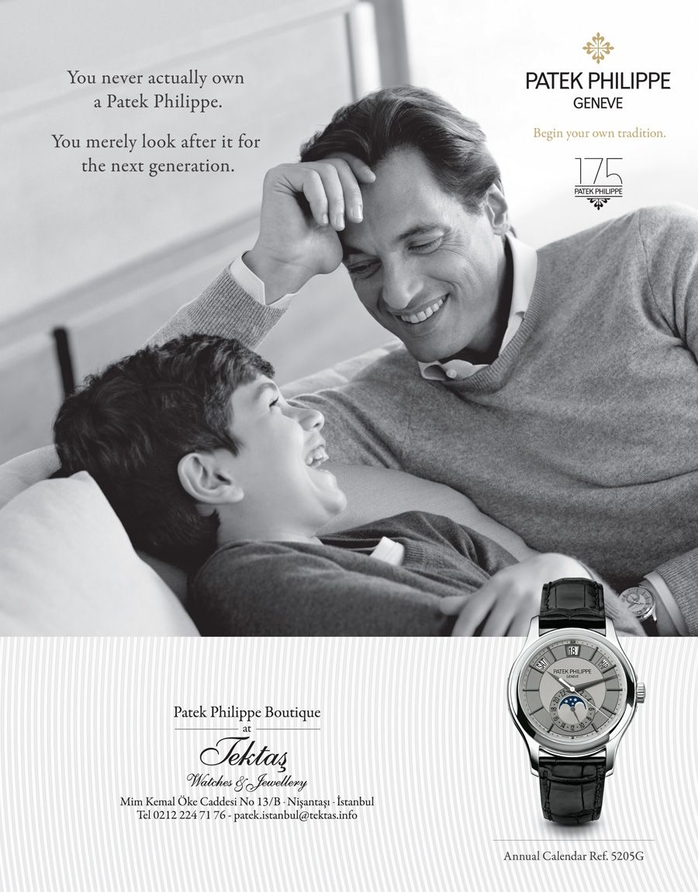
As the company states, a “Patek Philippe” is never truly owned… “Patek Philippe”
is a metonymy for a watch…
A metonymy is the use of something’s single characteristic to identify a more
complex entity. It is extremely common for people to take one well-understood or
easy-to-perceive aspect of something and use that aspect to stand either for the
thing as a whole or for some other aspect or part of it.
Metonymy is common in cigarette advertising in countries where legislation
prohibits depictions of the cigarettes themselves or of people using them.
One of the most famous cigarette slogans was developed by Sigmund Freud’s
nephew, Edward Bernays who, in creating the phrase ‘You’ve come a long way,
baby!’ hoped to ‘expunge the hussy label from women who smoked publicly’ by
referring to cigarettes as ‘torches of freedom.’ This was one of the early
examples of an advertising slogan that relied on social context to be imbued
with meaning. As with most good metonyms, this image was linked with a cultural
referent that aided in the persuasion.
Examples of metonymy
The
press’ for the news media
Wall Street’ for the
American financial industry,
The Crown’ for the
British monarchy.
He reads Shakespeare.’
(= his books)
I drink Champagne’ (=
a drink)
In digital advertising, an associated word often expresses the whole group:
I like
Volvo’ (= Volvo cars),
Woman is an uncharted
territory’ (= all the women)
a fragrance of
Sabatiny’ (= perfumes made by Sabatiny).
You never actually own
a Patek Philippe. You merely look after it for the next generation. (Patek
Philippe)
Above all, all those literary devices can be used either in a text or even in a
graphic and that’s notably true with metaphors.
Metaphors merge two seemingly incompatible images or concepts in an effort to
create a symbiotic symbolism. Metaphors are frequently used in digital
advertising as a way to bolster the perceived value of a product or to make it
seem more personal. Metaphors also help to create a particularly strong brand
image.
A metaphor used as an ad vehicle usually combines a copy with a visual image to
dramatize the effect.
An example of a visual or pictorial message that could lead to a metaphorical
interpretation in an advertising context is given in the RENFE ad. The Spanish
high-speed train. An image of the train has been juxtaposed next to a picture of
an eagle’s head.
The text in the right upper corner of the advertisement says; ‘The best way to
protect nature is by imitation. The frontal design inspired by the eagle head
makes the train 25% more energy-efficient.’
Even though the copy is not using any literary device, the advertisers want to
emphasize the train’s energy-efficiency as a result of the streamlined form of
the train’s front. The streamlined form (ground) that is used in the frontal
design of the train (target) has been inspired by the form of an eagle’s head.
The metaphor here is that the train is an eagle…
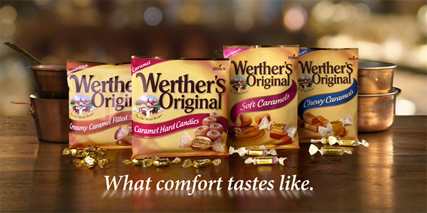
Other examples of a
metaphor in advertising
– What comfort tastes like.
Werther’s used this metaphor to associate eating its candy line with “comfort
food,” to make consumers feel good when eating them. caramel and chocolate fans
are led to believe that eating the candy will provide a break from their
everyday stresses and be able to experience a pleasurable sensation; removing
the guilt (of eating sugar) from the equation.
The below is the Mitsubishi Motors advert for their “Instinct car”.
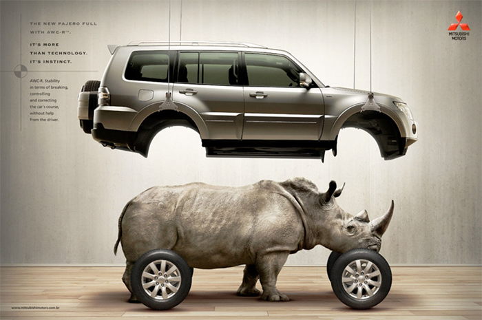
Even though the product in this advert is the car, the literary device used to
present the car is the rhino. The rhino is used to emphasize the strong features
of the car, it shows the car’s:
strength
stability
toughness
and its wild side
The words in the far left corner are here to complement the metaphor by saying
“It’s more than technology; it’s instinct.“
This hinges on the fact that a rhino is possibly one of the strongest animals in
the savannah and need excellent instincts to survive. The picture of the rhino
suggests that the car possess the same characteristics.
Other metaphors used in
ads:
Your
daily ray of sunshine (Tropicana)
Isn’t it time you gave
yourself some TLC? (Dannon)
Metonymy 和 synecdoche 是兩個發音和拼寫都比較難的詞語。但是在英語語言中，它們都可以指「用一物替代另一物」的修辭手法。比如，The
White House 經常被記者用來代替 the American government 美國政府。這種修辭手法是 metonymy 還是
synecdoche？又會不會既是 metonymy 換喻，也是 synecdoche 提喻呢？Suit 西裝，套裝這個詞可以被用作比喻什麼？
A lot people are often confused by the differences between metaphor, metonymy,
and synecdoche.
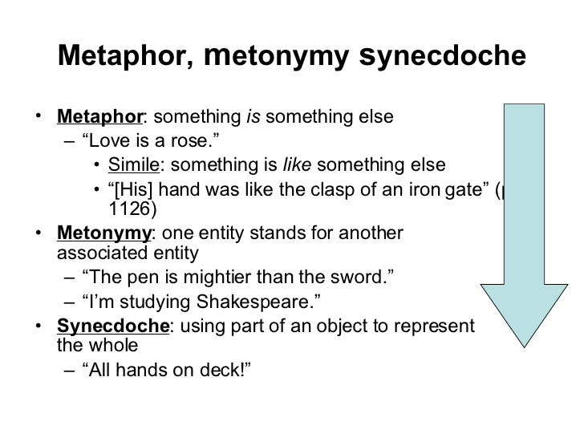
A
metonymy is about referring: a process of naming or identifying something by
mentioning something else which is a component part or symbolically linked.
Metonymy resembles
and is sometimes confused with a synecdoche. Even though it is based on the
same principle of contiguity, a synecdoche occurs only when a part is used to
represent a whole or a whole to represent a part. For example, when workers
are referred to as ‘hands’ or when a soccer team is implied by reference to
the state to which it belongs: ‘France beat Italy.’
In comparison, a
metaphor is about understanding, clarification and perception: it is a means
to understand or explain one paradox by describing it in terms of another.
MyAdGency.Com self-serving ad, with a metaphor, metonymy and 2 jokes…
Conclusion
Don’t worry if you can’t remember all those literary devices, but be aware that
those are just the tip of the iceberg. There are actually several hundreds of
literary devices that can be used to emphasize your copy…
If you love copywriting and want to know more to do-it-yourself, check here…
But if you love copywriting and think it’s too difficult or that you don’t have
the time to do it, we also have the “Done-for-you” solution below…


(81).jpg)


.jpg)


.png)